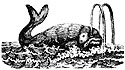

Good News for Whales
The world's whales are breathing a little easier since the International Whaling Commission's (IWC) June meeting in Buenos Aires, Argentina. The 40-nation IWC voted to reduce the number of whales that could be caught in the 1984-85 season from 10,011 to 6,040. This one third reduction in annual kills is considered a major victory by nonwhaling nations and conservationists.
Last year the IWC adopted a moratorium on commercial whaling that will take effect next year. This year, the nonwhaling nations used the five-day meeting to urge lower quotas and pressure the whaling countries to reduce the number of whales taken during the 1984-1985 season.
The battle at the meeting centered on the Southern quota. Japan and the Soviet Union argued that they should be allowed to take the same number of minks that they took last year (6,655), even though IWC scientists reported that the mink whale population has declined precipitously. When the Seychelles, an island-group nation in the Indian Ocean, proposed that only 3,887 minks be taken, Japan denounced the proposal as unacceptable, primarily because such a quota would make its whaling operations uneconomical. The Seychelles' proposal failed to muster the necessary three-quarter majority in the final plenary session (20 yes, 9 no, 7 abstain).
At that point, the Japanese expected to move the discussion off the floor and behind closed doors so they could cut a deal in a private commissioners' meeting. But the delegates from the Sevchelles managed to hold the floor and introduced another proposal, with a slightly higher quota of 4,224. Japan objected in vain, and the measure was put to a vote.
Surprisingly, South Africa switched its vote from no to abstain; Finland changed from no to yes; and two countries which felt that the Seychelles' first proposal was unreasonably low the United Kingdom and Denmark-switched from abstain to yes. The measure won the necessary three-quarters majority. The Japanese and Soviets were stunned, and the conservationists (and, we trust, the whales) were thrilled.
Nations can object to the quota and continue whaling, but they risk U.S. economic sanctions and international condemnation if they ignore or repudiate the convention. The IWC's actions this year set the stage for a dramatic confrontation at the next meeting, to be held in the gland, when the morato, is to take effect.
Friends of the Earth and others produced a daily news paper called ECO during the conference. Because the meaning was held in a Spanish-speaking country (for the it time), each day's proceedings were summarized in Spanish some of the articles were translated. For information about how to obtain the five issue set of ECO, write: David Phillips, Friends of the Earth, 1045 Sansome St. Francisco, CA 94111.
Borneo Burns
In other international it's just come to light that more than 13,500 square miles of tropical forest East Kalimantan, a province of Borneo, Indonesia, burned between February and June of 1983. News of the blaze traveled more slowly than fire itself, which raised an area three times the size of Lebanon and equal to two-thirds of the world's annual forest loss. The cause of the blaze is unknown.
Underlying deposits of soft coal and peat kept fires smoldering for months and reignited the blaze in different parts of the forest. Ordinarily, moist tropical forests aren't vulnerable to fires of this size, but a two-year drought in the Pacific region-a result of shifting ocean currents-dried out the forest. Logging operations that littered the forest floor with debris also contributed to the conflagration. The fire will affect timber harvest cycles for the next 70 years.
Filthy Lucre
"Money may be hazardous to your health." Someday soon that message may appear on our greenbacks ...right below "In God We Trust." The reason? The Federal Reserve Bank in San Francisco has been stopped from disposing of its shredded, worn out bank notes in public dumps, because high levels of copper and lead have been found in the bills.
The problem surfaced when the Fed's banks in San Francisco and Los Angeles came up with a new plan to get rid of old currency and food stamps. The more than four tons per day of trashed cash and coupons were to be turned into pellets and sold to the public as mulch. Unfortunately, an independent testing lab found that the level of toxic metals in the waste was 1,300 parts per million (pm) in the discarded dollars and 1,600 in the crumpled coupons. Federal law limits these concentrations to 1,000 pm. Until the Fed can figure out what to do, the San Francisco Chronicle reports that "residue from the San Francisco bank will go to a hazardous-waste site in Richmond, California."
Parties willing to have the material buried in their backyards (before it's shredded, of course) can no doubt be found.
EDITOR'S NOTE: The worldwide organization called Friends of the Earth is one the most effective environmental groups in existence today, and the activities of FOE-along with a broad range of other news concerning ecological developments are described each month in its publication titled Not Man Apart.) You can become a member of Friends of the Earth, and receive the excellent tabloid, by sending $25 ($100 for sponsor, $1,000 for life, $12 student/low income)or $15 for a subscription only to FOE, 1045 Sansome St., San Francisco, CA 94111.
|
 |
|
|